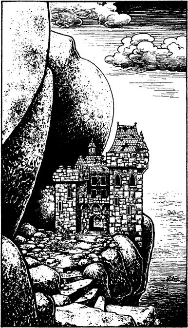

63
The path that leads to Castle Taunor is steep and slippery, and far too treacherous to be attempted on horseback. Cyrilus offers to stay and look after your horse while you collect some spa water, saying that he is too old to climb the hill track. However, you suspect that it is just his excuse to take an afternoon nap.

The castle is less than a mile from the highway, yet it takes over half an hour to complete the hazardous climb to the rock shelf. The crumbling castle walls are covered with damp foliage and mildew, and the over-hanging precipice envelops the keep with its gloomy shadow. You follow the sound of dripping water until you find yourself in a small chapel, where you discover a rivulet of sparkling spa-water trickling from a crack in the altar stone. As you kneel at the altar, filling your glass jar, you suddenly hear a noise: you are not alone.
If you have the Magnakai Discipline of Huntmastery, turn to 162.
If you do not possess this skill, turn to 278.